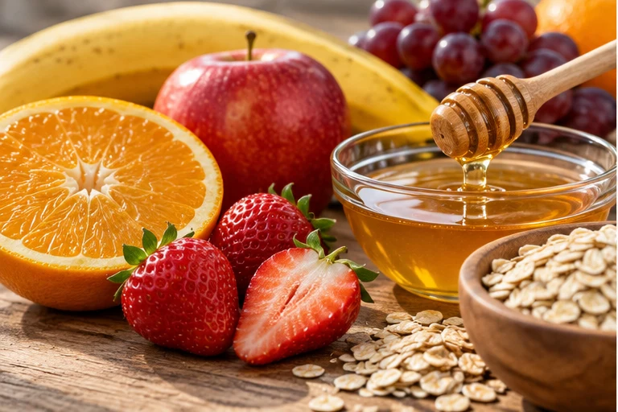

Una estructura.
Muchos átomos por descubrir.
Explora 40 moléculas, desde el metano hasta una grasa de 167 átomos. Cuenta, comprueba tu fórmula y descubre qué hacen en la vida.
Sin cronómetro. Con pistas y a tu ritmo.

Las claves del dibujo
1. Encuentra los carbonosEn una estructura esquelética, los extremos, vértices y uniones sin letra representan C. Un cruce sin unión no añade un átomo.
2. Completa cuatro enlacesPara un C neutro: H implícitos = 4 − suma de enlaces dibujados. Simple = 1; doble = 2; triple = 3.
3. Cuenta también las letrasO, N, S y P se escriben. Cuenta los H de OH, NH₂ o SH. No sumes otra vez un H que ya está escrito.
4. Construye la fórmulaAjusta los números con + y − o escríbelos. «Comprobar fórmula» muestra lo que contaste y orienta la revisión.
Elige tu próxima molécula
0 de 40 resueltasPara el docente · fuentes, formas químicas y respuestas
Las estructuras proceden de PubChem y se dibujan desde sus datos químicos mediante RDKit. Cada conteo se compara con la fórmula de PubChem y con una expansión explícita de todos los H. Las imágenes inferiores son ilustraciones de contexto compartidas por temas, no fotografías de moléculas individuales.
Los aminoácidos se muestran en su forma neutra; en medios biológicos suelen estar ionizados. ATP aparece como ácido sin cargas, una representación para conteo diferente de las formas predominantes en las células. «D-glucosa» conserva la representación de la fuente; no se exige identificar sus anómeros. Las proteínas completas se representan en esta actividad mediante sus aminoácidos y pequeños péptidos.
OpenStax · estructuras esqueléticas · Informe de validación · Datos y fuentes de las 40 moléculas
Observa y cuenta
Toca un átomo para explorar sus enlaces y sus hidrógenos.
Las letras distintas de C siempre cuentan como átomos de su propio elemento.
Cuña sólida: el enlace sale del plano hacia quien mira. Cuña de trazos: se aleja. Línea: queda en el plano del dibujo.
Indican orientación; no añaden átomos ni cambian la fórmula. Este es un dibujo 2D con información espacial, no un modelo que puedas girar.
Cuenta los átomos
¿Qué hace en la vida?
Mi constancia
Ver las moléculas incluidas
Cargando las moléculas…